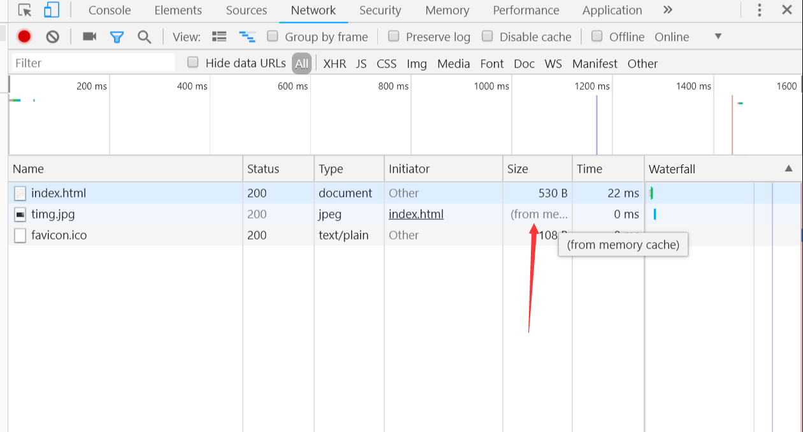

前言
我们都知道304状态码代表着缓存, 但是你知道后端具体做了什么么？ 今天我们来细聊一下
缓存分类
缓存分为强缓存和协商缓存, 但是强缓存并不会触发304状态码, 但是后端在处理缓存的时候, 强缓存也是很重要的一部分; 那么强缓存和协商缓存又存在哪些差异呢? 强缓存设置以后, 在缓存的有效时间内, 浏览器不会再向服务器发送请求, 而协商缓存不管缓存有没有效都会去请求服务器, 服务器端再判断要请求的文件是否经过修改, 如果改过, 则重新返回新文件, 否则的话直接设置响应码为304并结束本次请求, 浏览器一看状态码是304, 就会调用缓存里的文件, 那么强缓存和协商缓存具体在后端怎么操作呢？ 不急, 我们挨个来看 👇
强缓存
我们首先用node搭一个静态服务器 👇
1
2
3
4
5
6
7
8
9
10
11
12
13
14
15
16
17
18
19
20
21
22
23
24
25
26
|
let stat = promisefy(fs.stat)
http.createServer(async (req, res) => {
let { pathname } = url.parse(req.url)
let filename = path.join(__dirname, pathname)
try{
let result = await stat(filename)
if (result.isFile()) {
res.setHeader('Content-Type', mime.getType(filename) + 'charset; utf8')
return fs.createReadStream(filename).pipe(res)
}
} catch (e) {
return res.end('Not Fount')
}
res.end()
}).listen(3001, () => {
console.log('server is working on the http://localhost:3001')
})
|
现在我们添加强缓存, 强缓存设置很简单, 直接多设置一个请求头就好了
1
2
3
4
|
res.setHeader('Cache-Control', 'max-age=10')
res.setHeader('Expires', new Date(Date.now() + 10*1000).toGMTString())
|
看一下我们的html文件
1
2
3
4
| <body>
<p>Hello World</p>
<img src="/timg.jpg" alt="背景图">
</body>
|
当我们设置了强缓存, 在地址栏中输入 http://localhost:3001/index.html 第一次请求没什么变化, 再此请求的时候就会变成下图这样

有人可能会问了, 怎么只有img文件显示是来自缓存啊？ 其实强缓存只有对html文件里类似img这样的标签是有用的, 而且相应的状态码也并不会显示304
强缓存的问题
强缓存最大的问题就是不管要请求的文件内容变没变, 只要在缓存的有效时间内就不会重新请求服务器, 这样显然不太合适, 因为很可能文件早就被修改了, 而浏览器还在乐呵呵地使用旧数据
协商缓存
协商缓存就是来解决强缓存的问题的, 协商缓存就算文件在缓存的有效期内, 浏览器也还是会向服务器重新请求数据, 再由服务器决定该不该让浏览器使用缓存, 那具体怎么实现呢？ 大体思路就是 客户端在第一次请求服务端的时候, 服务端会将文件的最后修改时间(Last-Modified)写入响应头, 下次客户端请求的时候拿着这个最后修改时间(if-modified-since)去找服务器, 服务器查一下要请求的文件的最后修改时间和客户端手里拿的是不是一样, 一样则通知浏览器走缓存, 否则返回新内容
那么, 用代码怎么写呢？ 👇
1
2
3
4
5
6
7
8
9
10
11
12
13
14
15
16
17
18
19
20
21
22
23
24
25
26
27
28
29
30
31
32
33
| http.createServer(async (req, res) => {
let { pathname } = url.parse(req.url)
console.log(pathname);
let filename = path.join(__dirname, pathname)
let ifModifeldSince = req.headers['if-modified-since']
try{
let result = await stat(filename)
let ctime = result.ctime.toUTCString()
if (result.isFile()) {
if (ifModifeldSince === ctime) {
res.statusCode = 304
return res.end()
}
res.setHeader('Content-Type', mime.getType(filename) + '; charset=utf-8')
res.setHeader('Last-Modified', ctime)
return fs.createReadStream(filename).pipe(res)
}
} catch (e) {
return res.end('Not Fount')
}
res.end()
}).listen(3001, () => {
console.log('server is working on the http://localhost:3001')
})
|
这种通过对比文件最后修改时间来判断文件内容是否更改存在以下问题
- 对文件内容改完以后又改了回来, 导致最后修改时间变了而内容未变
- 文件最后修改时间只能精确到秒, 倘若对文件的修改时间控制在一秒以内, 也不能判断出文件内容是否改变
Etag
这是一个比较完美的解决方案, 直接读取文件内容, 并根据文件内容通过MD5生成一个摘要作为Etag返回给客户端, 下次客户端拿着这个etag值(if-none-matched)来请求服务端, 服务端对文件内容重新读取并生成摘要, 并和客户端带来的etag值来做对比, 如果相同则文件未改, 通知浏览器走缓存, 否则服务器返回新文件, 该方法和上边方法一样， 都属于协商缓存, 都会触发304
看下代码里怎么实现👇(只写下核心部分)
1
2
3
4
5
6
7
8
9
10
11
12
13
14
15
16
17
18
19
20
21
22
| let rs = fs.createReadStream(filename)
let md5 = crypto.createHash('md5')
let ifNoneMatch = req.headers['if-none-match']
let arr = []
rs.on('data', data => {
md5.update(data)
arr.push(data)
})
rs.on('end', () => {
let etag = md5.digest('base64')
if (ifNoneMatch === etag) {
res.statusCode = 304
return res.end()
}
res.setHeader('Content-Type', mime.getType(filename) + '; charset=utf8')
res.setHeader('Etag', etag)
return res.end(Buffer.concat(arr))
})
|
看的出etag虽然是个不错的方案但确有点吃性能, 因为每次请求都会将请求的文件都要读一遍, 所以有点时候我们也可以将（文件最后修改时间+文件的大小）作为etag的值
总结
既然有这么多中方案, 那么在实际开发中该怎么选择呢, 答案是全用！(按照强缓存 , last-modified, etag的顺序) 你没有听错, 我们可以先用设置强缓存, 设个几秒就够了, 当强缓存到期, 程序会走到last-modified协商缓存, 再走etag协商缓存， 如果都成立的话则返回304, 并重新设置强缓存,如果其中有一个不成立都要发送新的文件; 所以 304 = etag + last-modified

{kind=link}